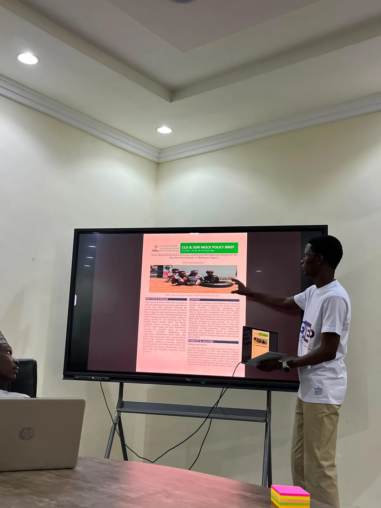
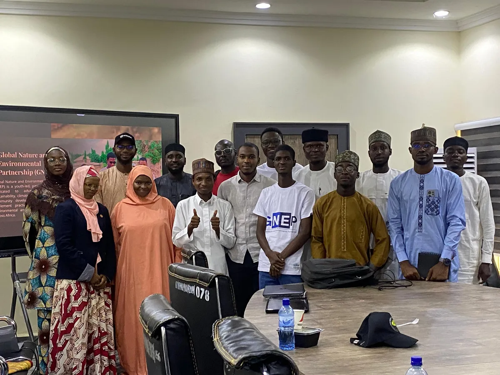

Building Knowledge. Strengthening Institutions. Advancing Innovation.
GNEP delivers professional training, technical advisory and institutional capacity development programmes that strengthen digital competencies, advance policy knowledge and equip individuals and organisations to respond to emerging technological and development challenges.
About GNEP Consultancy & Capacity Development
GNEP Consultancy & Capacity Development is the professional training, technical advisory, and institutional capacity-building arm of the Global Nature and Environmental Partnership (GNEP Africa).
Across Africa, schools, universities, civil society organizations, government ministries, and development programmes face a dual imperative: harnessing emerging technologies—especially artificial intelligence and digital workflows—while strengthening evidence-based public policy and environmental governance.
Unlike generic technology training vendors, our consultancy division remains anchored in GNEP's core institutional mission of environmental sustainability, public accountability, inclusive education, and local capacity ownership. We combine empirical academic research with hands-on field facilitation—building directly on our documented track record of training civil society leaders in policy brief drafting, proposal development, and ethical AI research tools in Katsina State.

6
Practice Pillars12
Client Sectors5
Delivery FormatsStructured Service Streams & Signature Training Tracks
GNEP structures its engagements across three core service streams—Individual Training (students, graduates, and professionals), Institutional Training (schools, universities, ministries, and NGOs), and Technical Consultancy (development organisations, government agencies, and private institutions).
Note on Programme Concepts: Our four signature programme tracks below represent modular curriculum frameworks that are tailored in scope, delivery format, and quotation to each engaging institution's approved requirements.
GNEP AI Literacy Academy
Modular foundation-to-advanced practical training in generative AI, prompt design, ethical AI use, and research productivity for students, educators, and professionals.
Enquire about this track →GNEP Policy Research & Writing Programme
Intensive training for civil servants, CSOs, and researchers in evidence-based policy analysis, policy brief drafting, proposal writing, and MEL frameworks.
Enquire about this track →GNEP Digital Innovation Bootcamp
Applied workshops guiding participants to build websites, digital portfolios, low-code web apps, and automated workflows using modern AI tools.
Enquire about this track →GNEP Institutional AI Transformation Programme
End-to-end organisational readiness assessment, staff capacity building, knowledge management, and responsible AI governance for public agencies and NGOs.
Enquire about this track →Our Consultancy & Training Services
Six specialized practice areas integrating artificial intelligence literacy, student education, public policy research, digital innovation, organizational transformation, and climate advisory.
Artificial Intelligence Literacy & Training
GNEP provides introductory and advanced practical training on artificial intelligence and the responsible, productive use of AI technologies across academic, professional, and institutional settings.
- Introduction to Artificial Intelligence
- Understanding generative AI systems
- Practical use of ChatGPT, Gemini, Claude & other AI platforms
- Prompt engineering & effective instruction design
- AI-assisted academic research
- AI for professional writing & communication
- AI for productivity & workplace efficiency
- AI-assisted information analysis
- Responsible AI use, ethics & limitations
- AI tools for problem-solving & decision-making
- Introduction to AI agents & automated workflows
- AI adoption for organisations & institutions

AI Education for Children, Young People & Students
GNEP is committed to making artificial intelligence education accessible, ethical, and age-appropriate for younger generations across primary, secondary, and tertiary education.
- Introduction to artificial intelligence & how intelligent systems work
- AI in everyday life & creative/educational applications of AI
- Digital awareness, online safety & responsible interaction with AI tools
- Introduction to generative AI & effective prompting
- AI-assisted learning, research, digital creativity & problem-solving
- Introduction to computational thinking, responsible AI use & misinformation awareness
- AI-assisted academic research, literature discovery & research organisation
- Academic writing support, data interpretation, analysis, presentations & proposals
- AI for innovation and entrepreneurship, research ethics & academic integrity
Policy Research, Analysis & Development Training
Designed for civil servants, policymakers, researchers, NGOs, CSOs, development practitioners, and university students seeking rigorous competencies in evidence-informed policymaking and institutional documentation.
- Introduction to public policy
- Policy analysis & policy evaluation
- Policy brief development
- Policy paper writing
- Research proposal development
- Evidence-based policymaking
- Research methodologies
- Literature reviews & referencing
- Report writing & institutional documentation
- Policy communication & advocacy
- Monitoring, evaluation & learning (MEL)
- AI-assisted policy research & documentation

AI-Powered Digital Innovation & Development
Empowering individuals, professionals, and organisations to harness modern AI-powered development tools to build websites, digital portfolios, automated workflows, and functional web applications.
- AI-assisted website development
- Professional portfolio development
- Personal & institutional website creation
- Web application development
- No-code and low-code development
- AI-assisted prototyping
- Workflow automation
- Digital productivity systems
- AI-powered application development
- Introduction to software development using AI
- Digital transformation advisory

Institutional Capacity Development & Digital Transformation
Comprehensive advisory and staff development services for public institutions, educational organisations, NGOs, and development partners transitioning toward modern, AI-augmented operations.
- Institutional AI literacy programmes
- Digital transformation readiness assessments
- AI integration in organisational workflows
- Digital productivity & team collaboration
- Technology adoption strategies
- Staff capacity development
- Institutional knowledge management
- Organisational research & documentation
- Digital communication systems
- Responsible AI governance frameworks
Climate, Environmental & Development Policy Consultancy
Directly anchored in GNEP Africa's environmental and sustainable development mandate—supporting governments, NGOs, schools, and international partners with rigorous climate research and programme design.
- Climate policy research & analysis
- Environmental governance advisory
- Climate education programme development
- Climate policy brief preparation
- Environmental awareness & literacy training
- Climate programme design
- Institutional climate capacity development
- Youth engagement & climate leadership training
- Sustainability strategy development
- Research & documentation for development programmes
Who We Work With
GNEP develops customised training and consultancy engagements tailored to the institutional mandate, technical baseline, and strategic goals of twelve distinct audience groups.
1. Primary & Secondary Schools
Age-appropriate student AI literacy, digital safety, computational thinking, and school climate clubs.
2. Universities & Tertiary Institutions
Faculty and departmental workshops on AI-assisted research, ethical governance, and digital innovation.
3. Undergraduate & Postgraduate Students
Thesis research organization, literature review tools, data interpretation, academic integrity, and portfolios.
4. Government Ministries, Departments & Agencies
Evidence-based policy formulation, digital transformation readiness, and climate governance advisory.
5. Civil Servants & Public-Sector Professionals
Policy brief writing, institutional documentation, AI workplace productivity, and programme evaluation.
6. Non-Governmental Organisations (NGOs)
Grant proposal development, MEL systems, staff AI integration, and digital communication workflows.
7. Civil Society Organisations (CSOs)
Advocacy policy briefs, elevator pitching, community research documentation, and coalition capacity building.
8. International Development Organisations
Technical training delivery partners, regional policy studies, and youth capacity implementation.
9. Research Institutions & Think Tanks
Collaborative policy papers, AI-assisted research workflows, and empirical field documentation.
10. Private-Sector Organisations & Businesses
Workforce AI productivity, workflow automation, sustainability strategy, and digital presence creation.
11. Young Professionals & Entrepreneurs
AI-assisted prototyping, low-code web apps, professional portfolio sites, and business productivity systems.
12. Individual Learners
Self-sponsored learners seeking structured, practical mentorship in AI literacy, research writing, and digital skills.
How We Deliver
Flexible, outcome-oriented delivery formats emphasising practical learning, real-world exercises, guided implementation, and measurable competency gains.
Institutional Training
Structured, multi-module programmes delivered directly to schools, universities, government ministries, NGOs, and corporate teams—customised to organisational workflows and departmental objectives.
Workshops & Masterclasses
Intensive, interactive one-day to three-day sessions focusing on specific practical competencies—such as policy brief drafting, prompt engineering, AI research workflows, or digital prototyping.
Professional Development Programmes
Cohort-based learning tracks designed to strengthen the analytical, writing, and technological capacities of emerging professionals, researchers, and institutional teams over a sustained schedule.
Technical Advisory & Consultancy
Tailored advisory engagements where GNEP specialists provide commissioned policy research, institutional AI readiness assessments, website/application development, climate programme design, and documentation support.
Online & Hybrid Training
Live virtual workshops, remote mentorship clinics, and blended in-person/online training programmes enabling participants across Nigeria and the wider African continent to participate without geographical barriers.
Our Approach to Learning & Advisory
We believe capacity development only succeeds when participants move from passive theory to confident, ethical, and independent application.

Every engagement begins with a baseline assessment of participant familiarity, hardware/connectivity realities, and institutional objectives so modules fit local African contexts.
Participants work on live tasks during sessions—drafting actual policy briefs, engineering prompts, verifying citations, or prototyping functional web pages and workflows.
We embed critical verification against AI hallucinations, strict academic referencing standards, data confidentiality, and child-safeguarding protocols into every curriculum.
Governed by GNEP's five-stage results chain, each programme tracks concrete outputs (completed briefs, prototypes, workflows) alongside post-training competency evaluations.
Partner With GNEP
We welcome long-term institutional partnerships, co-hosted capacity programmes, and commissioned technical engagements across six priority collaboration tracks.
Schools Seeking AI Literacy Programmes
Co-designing supervised, age-appropriate AI awareness, digital safety, and environmental stewardship clubs for primary and secondary school pupils.
Select School Partnership →Universities Seeking Digital Skills Workshops
Partnering with faculties, student unions, and research directorates to deliver academic AI literacy, research methodology, and digital innovation bootcamps.
Select University Partnership →Government Institutions Seeking Policy Training
Supporting ministries, departments, and local government councils with civil-service capacity training in policy brief drafting, evidence analysis, and MEL.
Select Government Partnership →NGOs Seeking Institutional Capacity Development
Strengthening civil society teams with AI-assisted workflow integration, grant proposal writing, digital communication systems, and institutional documentation.
Select NGO Capacity Partnership →Development Partners Seeking Technical Training Partners
Collaborating with international agencies and foundations as a local implementation and technical training partner in northern Nigeria and across Africa.
Select Development Partnership →Organisations Interested in Commissioned Research & Consultancy
Engaging GNEP to prepare policy briefs, climate vulnerability assessments, institutional websites, digital tools, or programme evaluation reports.
Select Commissioned Consultancy →Frequently Asked Questions
Key details on how GNEP scopes, prices, safeguards, and delivers consultancy and training engagements.
Request a Consultancy or Training Programme
Complete the structured specification below to request an individual training programme, institutional training, technical consultancy, or customised partnership engagement.
Thank You — Your Consultancy Request Has Been Recorded
Your consultancy and training programme request has been validated and registered with the GNEP Consultancy & Capacity Development Desk.